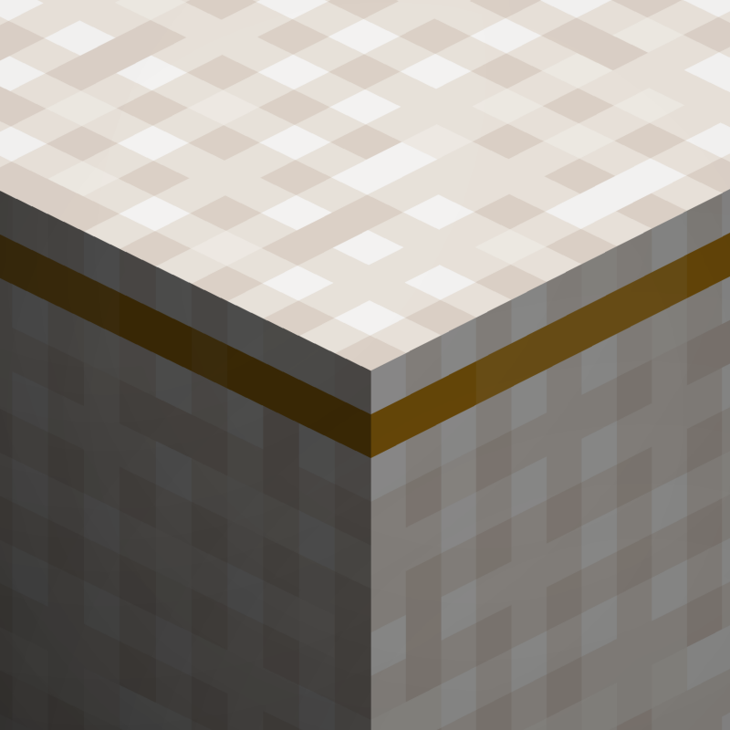
[Let's Do] Candlelight
共 186 个条目 · candlelight
版本: 2.1.12 · 来源: letsdo-candlelight-neoforge-2.1.12.jar
Ever dreamed of the perfect dinner? Prepare mouth-watering meals, transform your dining space into a masterpiece, and create unforgettable dining experiences!
官方介绍 （Modrinth · 中文版由 GLM AI 翻译，仅供参考）
优雅夜晚与精致盛宴
Farm & Charm 的精致扩展
"摆好餐桌。点亮蜡烛。"
在 Minecraft 里梦想过一场完美的晚餐吗？Candlelight（烛光晚宴）为你提供一切所需，打造精致菜肴、优雅餐桌与难忘的夜晚。
本版本带来了与 [Let's Do] Farm & Charm 更佳的兼容性，新增更多物品、更精细的配方和更丰富的机制。
全新的用餐方式
- 用煎锅或烹饪锅烹制的大餐
- 多阶段进食系统，让你把一顿饭拆成一口一口慢慢享用
- 可摆放的菜肴与餐盘，额外提供饥饿值与饱和度加成
- 你的作品既可以摆放出来，也可以直接享用
精致餐饮，需要时间。
附带效果的烹饪
- 为菜肴注入药水效果
- 将强力加成转移到你的菜品中
- 尝试不同食材，创造独一无二的料理效果
风味与功能兼得。
氛围与细节
- 打字机与信封，书写优雅的故事
- 装饰性餐具与餐桌摆设
- 一套纯粹为风格而生的装饰盔甲
- 更多沉浸式装饰元素
备好盛宴。
点亮蜡烛。
享受夜晚。
好好享用你的新料理，祝您好胃口！
需要 [Let's Do] Farm & Charm
献给 MissLilitu
Let's Do 因社区而成长。
由 GLM AI 翻译，仅供参考
查看英文原文（Modrinth）
Elegant Evenings & Refined Feasts
The sophisticated extension to Farm & Charm
"Set the table. Light the candles."
Ever dreamed of the perfect dinner in Minecraft? Candlelight provides everything you need to create refined meals, elegant tables and memorable evenings.
This version offers improved compatibility with [Let's Do] Farm & Charm, featuring additional items, refined recipes and expanded mechanics.
A New Way to Dine
- Large meals cooked in a Frying Pan or Cooking Pot
- Multi-stage food system allowing you to eat meals piece by piece
- Placeable dishes and plates that grant additional hunger and saturation bonuses
- The option to both place and consume your creations
Fine dining takes time.
Cooking with Effects
- Infuse meals with Potion effects
- Transfer powerful bonuses into your dishes
- Experiment with ingredients for unique culinary results
Flavor meets function.
Atmosphere & Details
- Typewriter and envelopes for elegant storytelling
- Decorative dinnerware and table settings
- A cosmetic armor set made purely for style
- Additional immersive decor elements
Prepare the feast.
Light the candles.
Enjoy the evening.
Enjoy your new meals and bon appétit!
Requires [Let's Do] Farm & Charm
Dedicated to MissLilitu
Let’s Do grows through its community.
物品与方块
 金合欢木大桌
金合欢木大桌candlelight:acacia_big_table · 方块
 金合欢木橱柜
金合欢木橱柜candlelight:acacia_cabinet · 方块
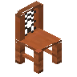
金合欢木椅子candlelight:acacia_chair · 方块
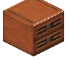
金合欢木抽屉candlelight:acacia_drawer · 方块
 金合欢木置物架
金合欢木置物架candlelight:acacia_shelf · 方块
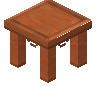
金合欢木桌candlelight:acacia_table · 方块
 竹木大桌
竹木大桌candlelight:bamboo_big_table · 方块
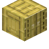
竹木橱柜candlelight:bamboo_cabinet · 方块
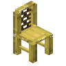
竹木椅子candlelight:bamboo_chair · 方块
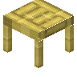
竹木柜台candlelight:bamboo_counter · 方块
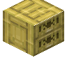
竹木抽屉candlelight:bamboo_drawer · 方块
 竹木水槽
竹木水槽candlelight:bamboo_kitchen_sink · 方块
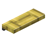
竹木置物架candlelight:bamboo_shelf · 方块
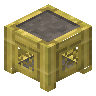
竹木火炉candlelight:bamboo_stove · 方块
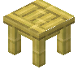
竹木桌candlelight:bamboo_table · 方块
 玄武岩柜台
玄武岩柜台candlelight:basalt_counter · 方块
 玄武岩水槽
玄武岩水槽candlelight:basalt_kitchen_sink · 方块
 玄武岩火炉
玄武岩火炉candlelight:basalt_stove · 方块
 鞑靼牛肉
鞑靼牛肉candlelight:beef_tartare · 物品candlelight:beef_wellington
candlelight:beef_wellington · 物品
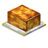
惠灵顿牛排candlelight:beef_wellington_block · 方块
 白汁肉块马铃薯饼
白汁肉块马铃薯饼candlelight:beef_with_mushroom_in_wine_and_potatoes · 物品
 甜菜沙拉
甜菜沙拉candlelight:beetroot_salad · 物品
 白桦木大桌
白桦木大桌candlelight:birch_big_table · 方块
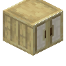
白桦木橱柜candlelight:birch_cabinet · 方块
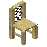
白桦木椅子candlelight:birch_chair · 方块
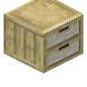
白桦木抽屉candlelight:birch_drawer · 方块
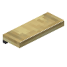
白桦木置物架candlelight:birch_shelf · 方块
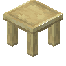
白桦木桌candlelight:birch_table · 方块
 博洛尼亚肉酱
博洛尼亚肉酱candlelight:bolognese · 物品
 candlelight:bowl
candlelight:bowlcandlelight:bowl · 物品?黄油
candlelight:butter · 物品
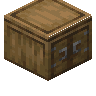
橱柜candlelight:cabinet · 方块全物品收集者旗帜：§6烛火晚宴
candlelight:candlelight_banner · 方块?全物品收集者旗帜：§6烛火晚宴
candlelight:candlelight_standard · 物品
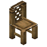
椅子candlelight:chair · 方块厨师长靴子
candlelight:chefs_boots · 物品厨师长夹克
candlelight:chefs_jacket · 物品
 厨师长裤子
厨师长裤子candlelight:chefs_pants · 物品
 樱花木大桌
樱花木大桌candlelight:cherry_big_table · 方块
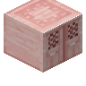
樱花木橱柜candlelight:cherry_cabinet · 方块
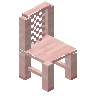
樱花木椅子candlelight:cherry_chair · 方块
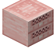
樱花木抽屉candlelight:cherry_drawer · 方块
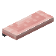
樱花木置物架candlelight:cherry_shelf · 方块
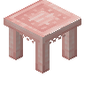
樱花木桌candlelight:cherry_table · 方块
 鸡肉白酱意面
鸡肉白酱意面candlelight:chicken_alfredo · 物品
 照烧鸡肉
照烧鸡肉candlelight:chicken_teriyaki · 物品
 蔬菜鸡肉
蔬菜鸡肉candlelight:chicken_with_vegetables · 物品巧克力盒
candlelight:chocolate_box · 方块
 巧克力慕斯
巧克力慕斯candlelight:chocolate_mousse · 物品钟罩
candlelight:cloche · 物品
 圆石柜台
圆石柜台candlelight:cobblestone_counter · 方块
 圆石水槽
圆石水槽candlelight:cobblestone_kitchen_sink · 方块
 圆石火炉
圆石火炉candlelight:cobblestone_stove · 方块烹饪帽
candlelight:cooking_hat · 物品
 平底锅
平底锅candlelight:cooking_pan · 方块
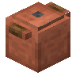
汤锅candlelight:cooking_pot · 方块
 绯红木大桌
绯红木大桌candlelight:crimson_big_table · 方块
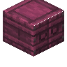
绯红木橱柜candlelight:crimson_cabinet · 方块
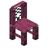
绯红木椅子candlelight:crimson_chair · 方块
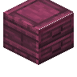
绯红木抽屉candlelight:crimson_drawer · 方块
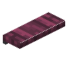
绯红木置物架candlelight:crimson_shelf · 方块
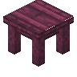
绯红木桌candlelight:crimson_table · 方块
 深色橡木大桌
深色橡木大桌candlelight:dark_oak_big_table · 方块
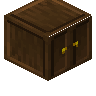
深色橡木橱柜candlelight:dark_oak_cabinet · 方块
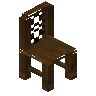
深色橡木椅子candlelight:dark_oak_chair · 方块
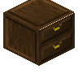
深色橡木抽屉candlelight:dark_oak_drawer · 方块
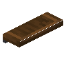
深色橡木置物架candlelight:dark_oak_shelf · 方块
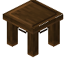
深色橡木桌candlelight:dark_oak_table · 方块
 深板岩柜台
深板岩柜台candlelight:deepslate_counter · 方块
 深板岩水槽
深板岩水槽candlelight:deepslate_kitchen_sink · 方块
 深板岩火炉
深板岩火炉candlelight:deepslate_stove · 方块餐铃
candlelight:dinner_bell · 方块
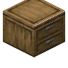
抽屉candlelight:drawer · 方块
 连衣裙
连衣裙candlelight:dress · 物品?玻璃杯
candlelight:drinking_glass · 方块
 末地石柜台
末地石柜台candlelight:end_counter · 方块
 末地石水槽
末地石水槽candlelight:end_kitchen_sink · 方块
 末地石火炉
末地石火炉candlelight:end_stove · 方块
 烹牛肉
烹牛肉candlelight:fillet_steak · 物品
 地板
地板candlelight:floorboard · 方块花环
candlelight:flower_crown · 物品正装衬衫
candlelight:formal_shirt · 物品
 candlelight:fresh_garden_salad
candlelight:fresh_garden_saladcandlelight:fresh_garden_salad · 物品
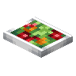
群英杂烩candlelight:fresh_garden_salad_block · 方块
 玻璃杯
玻璃杯candlelight:glass · 方块
 金戒指
金戒指candlelight:gold_ring · 物品
 花岗岩柜台
花岗岩柜台candlelight:granite_counter · 方块
 花岗岩水槽
花岗岩水槽candlelight:granite_kitchen_sink · 方块
 花岗岩火炉
花岗岩火炉candlelight:granite_stove · 方块
 蔬菜拼盘
蔬菜拼盘candlelight:harvest_plate · 物品
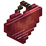
红心candlelight:heart · 方块
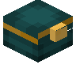
首饰盒candlelight:jewelry_box · 方块
 丛林木大桌
丛林木大桌candlelight:jungle_big_table · 方块
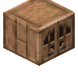
丛林木橱柜candlelight:jungle_cabinet · 方块
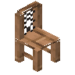
丛林木椅子candlelight:jungle_chair · 方块
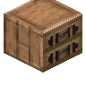
丛林木抽屉candlelight:jungle_drawer · 方块
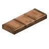
丛林木置物架candlelight:jungle_shelf · 方块
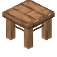
丛林木桌candlelight:jungle_table · 方块
 卡里饺
卡里饺candlelight:khinkali · 物品?厨房水槽
candlelight:kitchen_sink · 方块
 灯
灯candlelight:lamp · 方块
 candlelight:lasagne
candlelight:lasagnecandlelight:lasagne · 物品
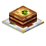
千层面candlelight:lasagne_block · 方块?信件
candlelight:letter · 物品未拆封的信件
candlelight:letter_closed · 物品拆封的信件
candlelight:letter_open · 物品情书
candlelight:love_letter · 物品拆封的情书
candlelight:love_letter_open · 物品
 红树木大桌
红树木大桌candlelight:mangrove_big_table · 方块
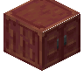
红树木橱柜candlelight:mangrove_cabinet · 方块
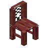
红树木椅子candlelight:mangrove_chair · 方块
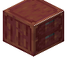
红树木抽屉candlelight:mangrove_drawer · 方块
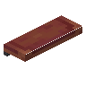
红树木置物架candlelight:mangrove_shelf · 方块
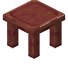
红树木桌candlelight:mangrove_table · 方块
 干酪
干酪candlelight:mozzarella · 物品
 泥砖柜台
泥砖柜台candlelight:mud_counter · 方块
 泥砖水槽
泥砖水槽candlelight:mud_kitchen_sink · 方块
 泥砖火炉
泥砖火炉candlelight:mud_stove · 方块
 蘑菇汤
蘑菇汤candlelight:mushroom_soup · 物品餐巾
candlelight:napkin · 物品
 领带
领带candlelight:necktie · 物品信笺
candlelight:note_paper · 方块可书写的信笺
candlelight:note_paper_writeable · 物品写好的信笺
candlelight:note_paper_written · 物品
 橡木大桌
橡木大桌candlelight:oak_big_table · 方块
 橡木橱柜
橡木橱柜candlelight:oak_cabinet · 方块橡木椅子
candlelight:oak_chair · 方块橡木抽屉
candlelight:oak_drawer · 方块
 橡木置物架
橡木置物架candlelight:oak_shelf · 方块橡木桌
candlelight:oak_table · 方块
 薄饼
薄饼candlelight:omelet · 物品
 小型画作
小型画作candlelight:painting · 方块
 博洛尼亚肉酱意面
博洛尼亚肉酱意面candlelight:pasta_with_bolognese · 物品
 生菜意面
生菜意面candlelight:pasta_with_lettuce · 物品
 干酪酱汁意面
干酪酱汁意面candlelight:pasta_with_mozzarella · 物品
 盘子
盘子candlelight:plate · 方块?烹猪肋排
candlelight:pork_rib · 物品
 candlelight:pork_ribs
candlelight:pork_ribscandlelight:pork_ribs · 物品烹猪肋排
candlelight:pork_ribs_block · 方块
 玫瑰盆栽
玫瑰盆栽candlelight:potted_rose · 方块
 石英柜台
石英柜台candlelight:quartz_counter · 方块
 石英水槽
石英水槽candlelight:quartz_kitchen_sink · 方块
 石英火炉
石英火炉candlelight:quartz_stove · 方块
 红色下界砖柜台
红色下界砖柜台candlelight:red_nether_bricks_counter · 方块
 红色下界砖水槽
红色下界砖水槽candlelight:red_nether_bricks_kitchen_sink · 方块
 红色下界砖火炉
红色下界砖火炉candlelight:red_nether_bricks_stove · 方块
 胡萝卜烤牛肉
胡萝卜烤牛肉candlelight:roastbeef_with_glazed_carrots · 物品
 羊排佐生菜
羊排佐生菜candlelight:roasted_lamb_with_lettuce · 物品
 玫瑰
玫瑰candlelight:rose · 方块
 生菜沙拉
生菜沙拉candlelight:salad · 物品
 白葡萄酒酱汁鲑鱼
白葡萄酒酱汁鲑鱼candlelight:salmon_on_white_wine · 物品
 砂岩柜台
砂岩柜台candlelight:sandstone_counter · 方块
 砂岩水槽
砂岩水槽candlelight:sandstone_kitchen_sink · 方块
 砂岩火炉
砂岩火炉candlelight:sandstone_stove · 方块
 衬衫
衬衫candlelight:shirt · 物品边桌
candlelight:side_table · 方块餐具柜
candlelight:sideboard · 方块
 沙发
沙发candlelight:sofa · 方块
 云杉木大桌
云杉木大桌candlelight:spruce_big_table · 方块
 云杉木橱柜
云杉木橱柜candlelight:spruce_cabinet · 方块云杉木椅子
candlelight:spruce_chair · 方块云杉木抽屉
candlelight:spruce_drawer · 方块
 云杉木置物架
云杉木置物架candlelight:spruce_shelf · 方块云杉木桌
candlelight:spruce_table · 方块
 石砖柜台
石砖柜台candlelight:stone_bricks_counter · 方块
 石砖水槽
石砖水槽candlelight:stone_bricks_kitchen_sink · 方块
 石砖火炉
石砖火炉candlelight:stone_bricks_stove · 方块桌
candlelight:table · 方块?碗
candlelight:table_bowl · 方块餐具套件
candlelight:table_set · 方块桌标
candlelight:table_sign · 方块番茄干酪沙拉
candlelight:tomato_mozzarella_block · 方块
 candlelight:tomato_mozzarella_salad
candlelight:tomato_mozzarella_saladcandlelight:tomato_mozzarella_salad · 物品
 番茄汤
番茄汤candlelight:tomato_soup · 物品
 热带鱼片
热带鱼片candlelight:tropical_fish_supreme · 物品
 裤子和马甲
裤子和马甲candlelight:trousers_and_vest · 物品
 铜打字机
铜打字机candlelight:typewriter_gold · 方块
 铁打字机
铁打字机candlelight:typewriter_iron · 方块
 诡异木大桌
诡异木大桌candlelight:warped_big_table · 方块
 诡异木橱柜
诡异木橱柜candlelight:warped_cabinet · 方块
 诡异木椅子
诡异木椅子candlelight:warped_chair · 方块
 诡异木抽屉
诡异木抽屉candlelight:warped_drawer · 方块诡异木置物架
candlelight:warped_shelf · 方块
 诡异木桌
诡异木桌candlelight:warped_table · 方块
 葡萄酒杯
葡萄酒杯candlelight:wine_glass · 方块